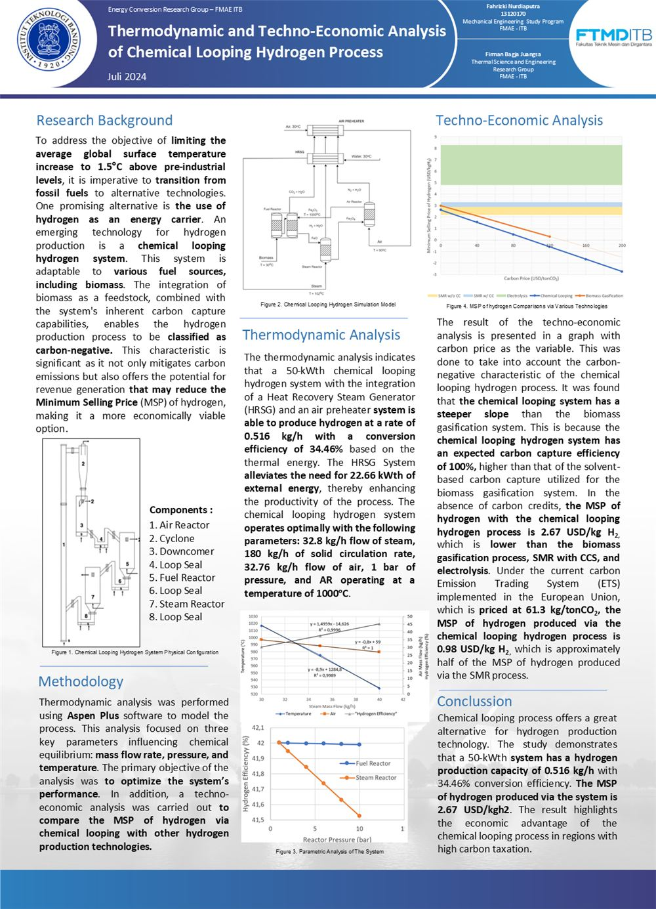
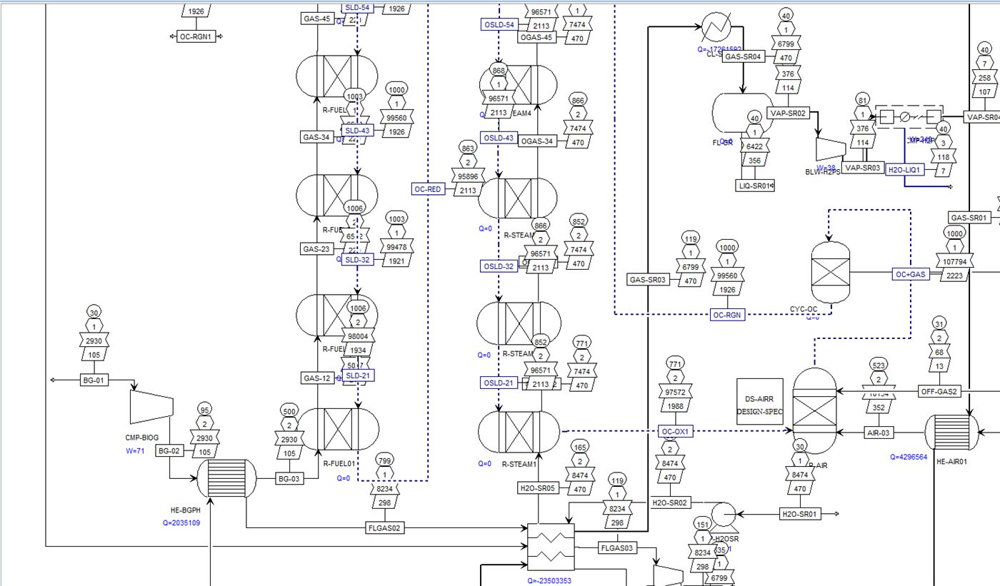
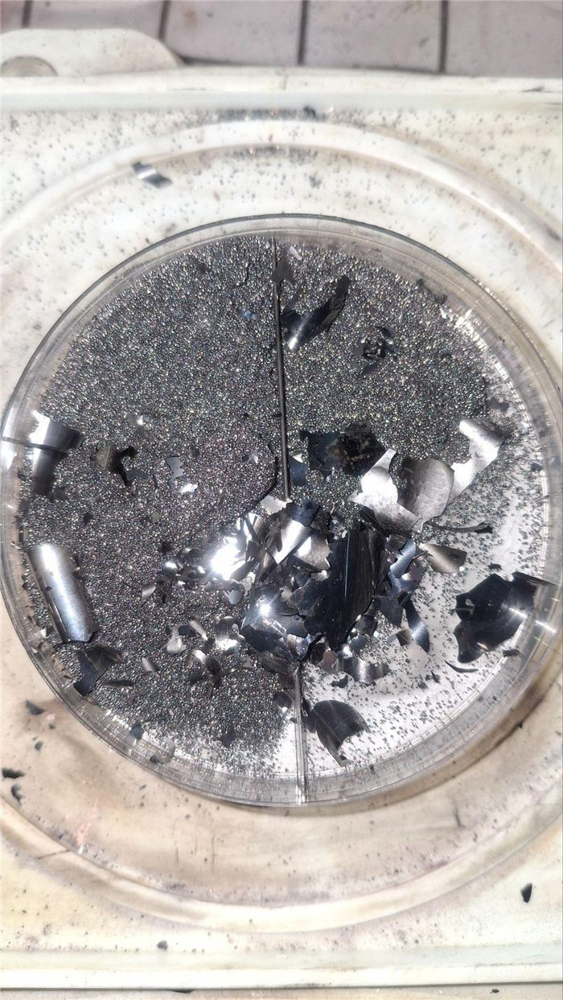
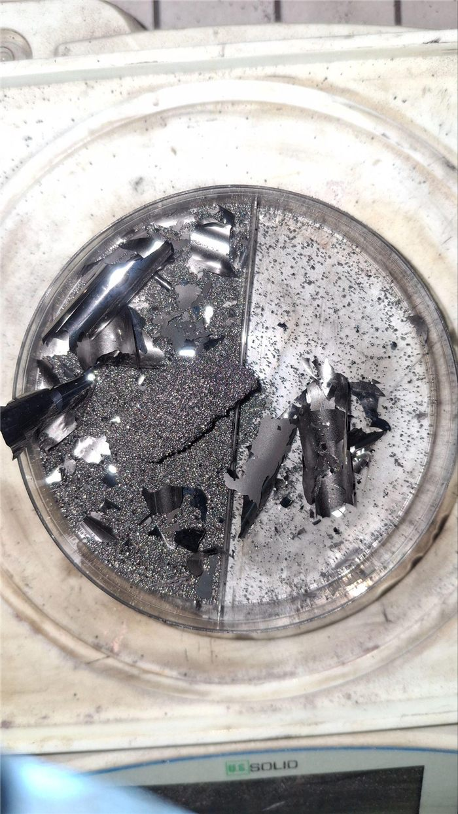
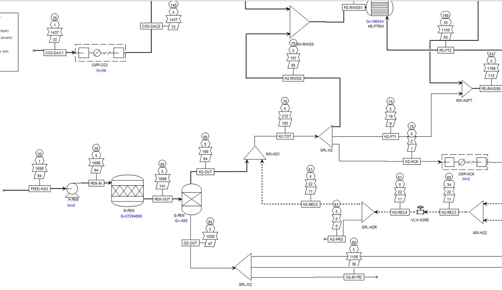

Sustainable Fuels & HydrogenBahan Bakar Berkelanjutan & Hidrogen持続可能燃料・水素
Chemical looping, methane pyrolysis and Fischer–Tropsch synthesis to produce hydrogen, solid carbon and sustainable aviation fuel.Chemical looping, pirolisis metana, dan sintesis Fischer–Tropsch untuk memproduksi hidrogen, karbon padat, dan bahan bakar aviasi berkelanjutan.ケミカルルーピング、メタン熱分解、フィッシャー・トロプシュ合成により、水素、固体炭素、持続可能な航空燃料を製造します。
What we studyApa yang kami teliti研究内容
Hydrogen with built-in carbon captureHidrogen dengan penangkapan karbon bawaan炭素回収を内包した水素製造
A metal-oxide oxygen carrier circulates between a fuel reactor, a steam reactor and an air reactor. The fuel leaves as a pure CO₂ stream and the steam is split into high-purity hydrogen. With biomass as fuel, the process can be carbon-negative, so carbon pricing pushes its hydrogen cost below steam reforming with CCS.Oxygen carrier oksida logam bersirkulasi antara reaktor bahan bakar, reaktor uap, dan reaktor udara. Bahan bakar keluar sebagai aliran CO₂ murni dan uap dipecah menjadi hidrogen berkemurnian tinggi. Dengan bahan bakar biomassa, proses dapat bersifat karbon-negatif sehingga harga karbon menurunkan biaya hidrogennya di bawah steam reforming dengan CCS.金属酸化物の酸素キャリアが燃料反応器、水蒸気反応器、空気反応器を循環します。燃料は純粋なCO₂として排出され、水蒸気は高純度水素に分解されます。バイオマス燃料ではカーボンネガティブとなり、炭素価格によりCCS付き水蒸気改質より安価な水素が得られます。


Methane pyrolysis: hydrogen plus solid carbonPirolisis metana: hidrogen dan karbon padatメタン熱分解：水素と固体炭素
Splitting methane at about 900–1100 °C in a fluidized bed gives hydrogen without CO₂. The carbon stays as a solid product that can be sold. We vary temperature, fluidization number and feed composition, measure hydrogen yield by gas chromatography, and characterize the carbon to estimate its market value.Memecah metana pada sekitar 900–1100 °C dalam fluidized bed menghasilkan hidrogen tanpa CO₂. Karbonnya tertinggal sebagai produk padat yang dapat dijual. Kami memvariasikan temperatur, bilangan fluidisasi, dan komposisi umpan, mengukur produksi hidrogen dengan kromatografi gas, dan mengkarakterisasi karbon untuk memperkirakan nilai jualnya.流動層で約900–1100 °Cでメタンを分解すると、CO₂を出さずに水素が得られ、炭素は販売可能な固体生成物として残ります。温度、流動化数、供給組成を変化させ、ガスクロマトグラフで水素収率を測定し、炭素を評価して市場価値を見積もります。


From hydrogen and CO₂ to jet fuelDari hidrogen dan CO₂ menjadi bahan bakar jet水素とCO₂からジェット燃料へ
Multi-scenario Aspen Plus models combine hydrogen supply (PEM electrolysis, chemical-looping water splitting or ammonia cracking) with captured CO₂, reverse water-gas shift, Fischer–Tropsch synthesis and hydrocracking to produce FT-SPK sustainable aviation fuel. Energy, carbon and cost balances show which route works best for Indonesia.Model Aspen Plus multi-skenario menggabungkan pasokan hidrogen (elektrolisis PEM, chemical-looping water splitting, atau cracking amonia) dengan CO₂ tertangkap, reverse water-gas shift, sintesis Fischer–Tropsch, dan hydrocracking untuk menghasilkan SAF FT-SPK. Neraca energi, karbon, dan biaya menunjukkan jalur terbaik untuk Indonesia.複数シナリオのAspen Plusモデルで、水素供給（PEM電解、ケミカルルーピング水分解、アンモニア分解）と回収CO₂、逆水性ガスシフト、FT合成、水素化分解を組み合わせ、FT-SPK航空燃料を製造。エネルギー・炭素・コスト収支からインドネシアに最適な経路を示します。

Researchers in this themePeneliti di tema iniこのテーマの研究者
Selected publicationsPublikasi terpilih主な論文
Related research projectsProyek riset terkait関連研究課題
Recent student thesesTesis mahasiswa terbaru最近の学位論文
Interested in this theme?Tertarik dengan tema ini?このテーマに興味がありますか？
See example topics for students, or talk to us about a joint project.Lihat contoh topik untuk mahasiswa, atau diskusikan proyek bersama.学生向けテーマ例を見る、または共同研究をご相談ください。